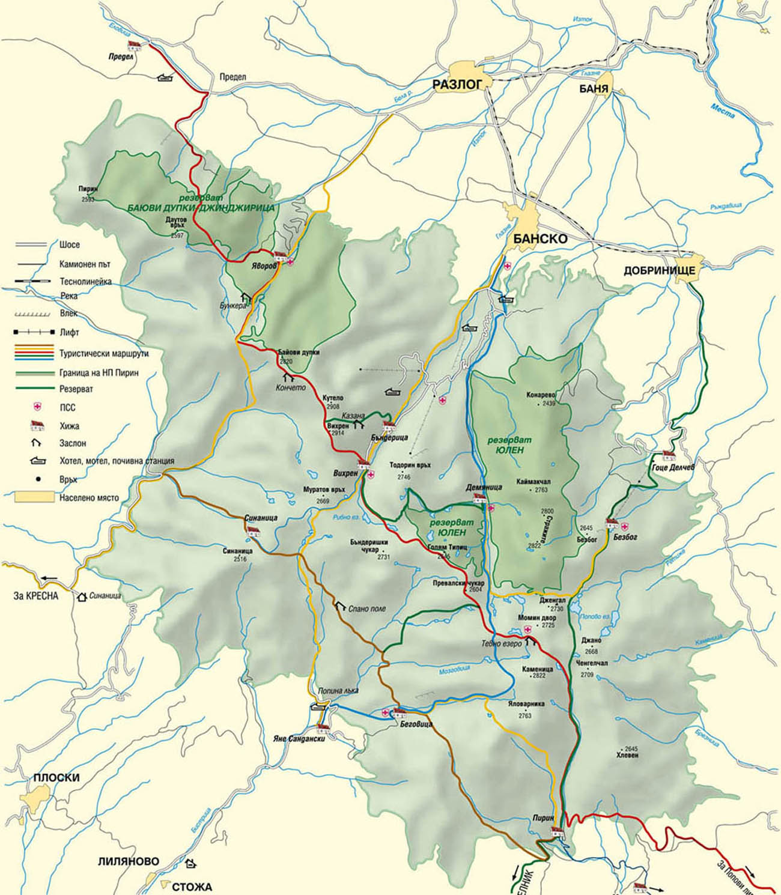

ПЪТНА МРЕЖА

По цялото западно, северно и източно подножие на планината и през нея в южната и част
преминават участъци от 4 пътя от Държавната пътна мрежа:
-
По цялото западно подножие, по долината на река Струма, от град Симитли до ГКПП "Кулата",
на протежение от 70,5 км — участък от първокласен път № 1 Видин — София — Благоевград — ГКПП "Кулата".
-
Поцялото северно и източно подножие на планината, от град Симитли до село Садово (Община Хаджидимово),
на протежение от 98,5 км — участък от второкласен път № 19 Симитли — Банско — Гоце Делчев — ГКПП "Илинден".
-
В югозападната част на планината, от село Ново Делчево до град Мелник, целият участък 12,5 км на третокласен път № 109.
-
В южната част, през седловината Попови ливади, ог град Гоце Делчев до село Чучулигово, на протежение
от 56,1 км — участък от третокласен път № 198 Гоце Делчев — Петрич — ГКПП "Златарево".
Успоредно на първокласен път № 1, по долината на река Струма, от град Симитли до село Кулата
преминава и участък от трасето на жп линията София — Благоевград — Кулата.